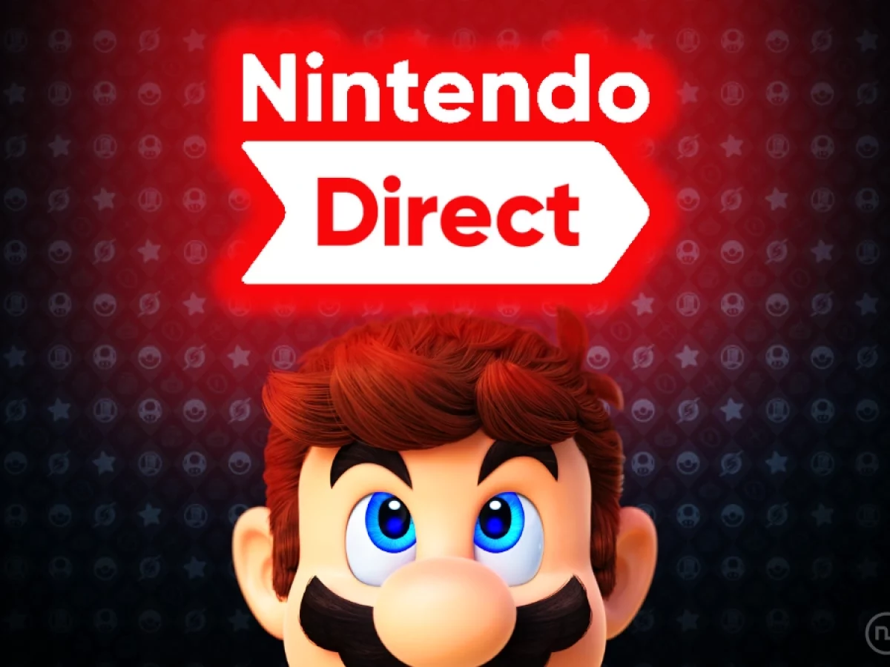
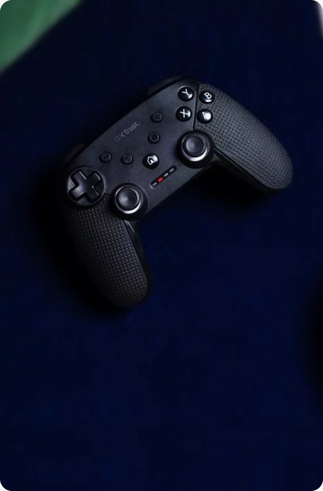
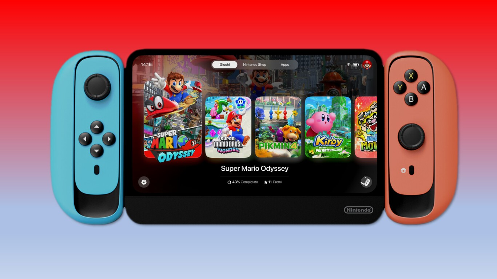
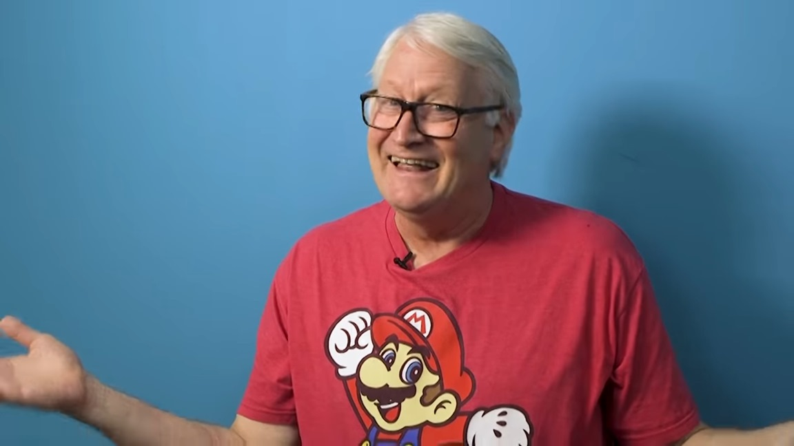

Nintendo nos revela el próximo nintendo direct!

Super Mario Bros Wonder: todo lo que debes saber

Red Dead Redeption 3, ya fue anunciado

Reseña del Mando GXT 542 Muta de Trust, ¿merece la pena en Switch?
Mini Noticias

Así podría verse la nueva Nintendo Switch 2!

Starfield, GOTY o Fracaso?

Stray, tendrá su propia película!
